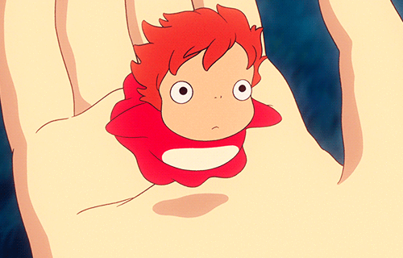

REVIEW
I genuiely think Ponyo is one of the best things I've ever watched. The magic felt so alive, and even though I can be considered a 'young adult', this movie made me feel like a kid again. The first time I watched this movie, it was after a stressful week of working. I met up with my boyfriend, and he introduced me to this movie; Because of that, Ponyo has a very special place in my heart.
TRIVIA!
- Sasuke is based on Hayao Miyazaki's son Gorô Miyazaki, when he was five years old.
- The opening twelve seconds, involving vast schools of fish and undersea creatures, required 1,613 pages of conceptual sketches to develop.
- The design of the ocean waves during the typhoon caused by Ponyo were inspired by the waves in the famous woodblock print The Wave Off Kanagawa by Japanese artist Hokusai.